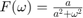

P02: Señales en Tiempo Contínuo

UNIDAD PROFESIONAL INTERDISCIPLINARIA EN INGENIERÍA Y TECNOLOGÍAS AVANZADAS
Análisis de Señales y Sistemas
Autor: García Sandoval Juan Jesús 2MV1
Profesor: Dr Rafael Martínez Martínez
Contents
Objetivos
Como objetivos principales de la práctica se pretende implementar la manipulación básica de MATLAB, así como la graficación de señales reales y complejas continuas, la transformación de señales continuas (escalamientos y traslaciones) y el cálculo de energía y potencia de señales continuas
Introducción
En la presente práctica se desarrollará una página web, en lenguaje html utilizando MATLAB.
MATLAB es un software matemático desarrollado por MathWorks y su nombre proviene de la Abreviación de MATrix LABoratory.
MATLAB surgió a partir que Cleve Moler, co-fundador de MathWorks, matemático estadounidense y programador de ordenador que se especializa en análisis numérico, desarrolló un paquete de informática numérico, para dar su alumnado en la Universidad de Nuevo México, surgiendo en 1984 la primera versión estable del software.
MATLAB implementa un lenguaje de programación propio (lenguaje M) para desarrollar aplicaciones y realizar cálculos de análisis numérico.
MATLAB es un software muy útil para la resolución de problemas matemáticos, sin embargo exicten otras alternativas muy similares a MATLAB, po ejemplo Octave que se considera como la versión libre de MATLAB, Maple que es una alternativa muy empleada, y por parte de Wolfram está Mathematica y WolframAlpha esta última es una plataforma en linea que carece de código riguroso por lo que es muy senillo de usar, pero también carece de características como MATLAB o Mathematica.
1
Se creó una función llamada fun1 la cual recibe dos parametros y para entonces regesar la evaluación 